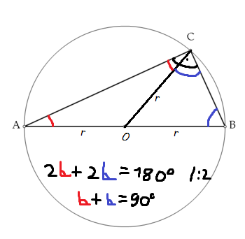

Ha a kör átmérőjének a 2 végpontját össze kötjük a kör bármelyik pontjával (kivéve az átmérő pontjaival), derékszögű háromszöget kapunk. bizonyítás: 
AOC, OBC = egyenlő szárú, mert 2-2 oldaluk sugárnyi hosszúságú